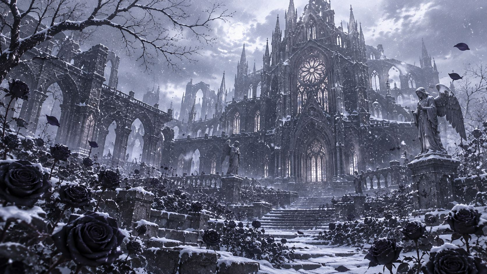

👁️ สิ่งที่เห็น
ยอดหอคอยสูงตั้งตระหง่านเหนือม่านหมอกและต้นไม้สีดำ กลีบกุหลาบที่ร่วงบนหิมะดูเหมือนเศษกระดาษที่ฉีกจากหนังสือ

The Cathedral of Sleeping Roses
สถานที่ลึกลับระหว่างความฝันและความเป็นจริง
ไม่มีใครรู้ว่าวิหารถูกสร้างขึ้นเมื่อใด เหลือเพียงอาคารหินโบราณ สวนกุหลาบสีดำ และหิมะที่ตกไม่รู้จบ
วิหารกุหลาบนิทราไม่ปรากฏบนแผนที่ทั่วไป ไม่มีอาณาเขตแน่นอน และเครื่องมือบอกทิศธรรมดาไม่อาจชี้ตำแหน่งได้อย่างน่าเชื่อถือ
กล่าวกันว่ามันตั้งอยู่ตรงรอยต่อของโลกแห่งความฝันกับโลกจริง ฤดูกาลไม่เคยเปลี่ยน เวลาเคลื่อนช้า และความเงียบกลายเป็นส่วนหนึ่งของธรรมชาติ
ความงดงาม ความสงบ และความโดดเดี่ยว อยู่ร่วมกันในที่เดียว
ยอดหอคอยสูงตั้งตระหง่านเหนือม่านหมอกและต้นไม้สีดำ กลีบกุหลาบที่ร่วงบนหิมะดูเหมือนเศษกระดาษที่ฉีกจากหนังสือ
ลมผ่านซุ้มประตู หิมะบนหลังคา กลีบกุหลาบเสียดสีกัน เสียงฝีเท้าสะท้อนในโถง แต่ไม่เคยมีเสียงระฆัง
หนาวสม่ำเสมอแต่ไม่รุนแรงจนอยู่ไม่ได้ หมอกขาวเทาลอยเหนือสวน ลานหิน และสุสาน
หิมะเย็น หินเก่า ไม้แห้ง กุหลาบดำมีกลิ่นคล้ายดอกไม้แห้งปนกระดาษเก่า หอสมุดมีกลิ่นหมึก สุสานมีกลิ่นดินเย็น
จันทร์สีเงินในที่โล่ง เทียนและตะเกียงตามทางเดิน เศษกระจกสีทอดแสงม่วง น้ำเงิน และแดงเข้มบนพื้นหิน
ไม่รุนแรง แต่แทรกในสิ่งธรรมดา เช่น กลีบกุหลาบทวนลม ประตูที่ดูใกล้กว่าจริง ทางเดินที่ทำให้รู้สึกว่าผ่านที่เดิมซ้ำ
เลือกสำรวจจุดไหนก่อนก็ได้ ไม่ต้องเรียงลำดับ แตะชื่อสถานที่เพื่อดูรายละเอียด
หยิบข่าวลือจากวิหารสักเรื่อง หรือสุ่มปรากฏการณ์ที่ตัวละครอาจพบระหว่างเดินสำรวจ
กดปุ่มด้านซ้ายเพื่อฟังเสียงกระซิบจากวิหาร
ทั้งหมดเป็นเพียงบรรยากาศประจำพื้นที่ ไม่ถือเป็นหลักฐานว่ามีสิ่งมีชีวิตหรือวัตถุพิเศษซ่อนอยู่ และผู้เล่นไม่สามารถจับหรือครอบครองได้โดยอัตโนมัติ
ใช้เวทมนตร์ตามความเหมาะสมของตัวละคร และเลือกเส้นทางที่อยากเดินได้อย่างอิสระ
เพื่อให้ทุกคนได้เล่นด้วยกันอย่างสบายใจ และให้ความลับของวิหารยังเป็นความลับ

ไม่ใช่ดินแดนแห่งความตาย ไม่ใช่สรวงสวรรค์ และไม่ใช่สถานที่ที่สร้างขึ้นเพื่อกักขังใคร
หิมะยังตกบนหลังคา กุหลาบดำยังบานในสวน แสงจันทร์ยังส่องผ่านกระจกสีลงบนพื้นหิน ไม่มีใครเรียกร้องให้ที่นี่ต้องเปลี่ยนแปลง
บางคนมาเพื่อค้นหาความลับ แต่สำหรับบางคน ที่นี่อาจเป็นที่ที่ไม่จำเป็นต้องค้นหาอะไรเลย
The Cathedral of Sleeping Roses — Where Silence Never Sleeps.
วิหารกุหลาบนิทรา สถานที่ซึ่งความเงียบไม่เคยหลับใหล